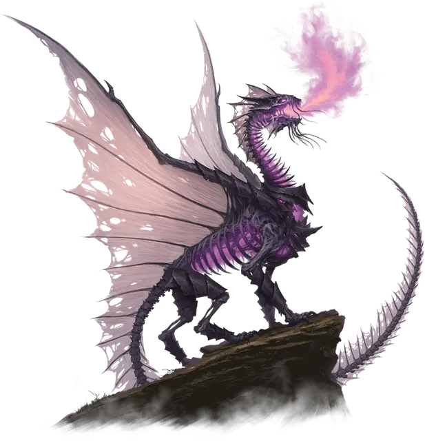

Высший дракон смерти
Greater Death Dragon
Огромная Нежить, нейтрально-злая

Класс Доспеха 16 (природный доспех)
Хиты 230 (20к12 + 100)
Скорость 40 футов, летая 80 футов
| мод | спас | ||
|---|---|---|---|
| СИЛ | 23 | +6 | +6 |
| ЛОВ | 10 | +0 | +5 |
| ТЕЛ | 20 | +5 | +5 |
| мод | спас | ||
|---|---|---|---|
| ИНТ | 11 | +0 | +0 |
| МДР | 14 | +2 | +7 |
| ХАР | 10 | +0 | +0 |
Навыки Восприятие +7, Скрытность +5
Сопротивление урону колющий
Иммунитет к урону некротическая энергия, яд
Иммунитет к состояниям истощение, отравление
Чувства слепое зрение 60 футов, тёмное зрение 120 футов, пассивное Восприятие 17
Языки Общий, Драконий
Опасность 14 (11500 опыта)
Бонус мастерства +5
Особенности
Легендарное сопротивление (3/день). Если дракон проваливает спасбросок, он может вместо этого сделать спасбросок успешным.
Необычная природа. Дракон не нуждается в воздухе, еде, питье и сне.
Действия
Мультиатака. Дракон совершает одну атаку Укусом и две атаки Когтём.
Укус. . Рукопашная атака оружием: +11 к попаданию, досягаемость 10 фт., одна цель. Попадание: 17 (2к10 + 6) колющего урона плюс 4 (1к8) урона некротической энергией. Если цель — Большого размер или меньше, она становится схваченной (Сл высвобождения 19). Пока цель схвачена, она опутана, и дракон не может укусить другую цель.
Коготь. . Рукопашная атака оружием: +11 к попаданию, досягаемость 5 фт., одна цель. Попадание: 10 (1к8 + 6) рубящего урона.
Дыхание Катаклизма (перезарядка 5-6). Дракон выдыхает волну призрачного фиолетового огня 60-футовым конусом. Все существа в этой области должно совершить спасбросок Ловкости Сл 18, получая 45 (10к8) урона некротической энергией при провале или половину этого урона при успехе. Цель умирает, если дыхание уменьшает её хиты до 0. Помимо этого, любой гуманоид Среднего размера или меньше, убитый уроном от дыхания, и все трупы подобных существ внутри конуса, становятся зомби [zombie] под контролем дракона. Зомби действует с такой же инициативой как у дракона, но сразу после его хода. При отсутствии других команд зомби пытается убить любое существо, не являющееся Нежитью, с которыми он сталкивается.
Легендарные действия
Высший дракон смерти может совершить 3 легендарных действия, выбирая из представленных ниже вариантов. За один раз можно использовать только одно легендарное действие, и только в конце хода другого существа. Высший дракон смерти восстанавливает использованные легендарные действия в начале своего хода.
• Коготь. Дракон совершает одну атаку Когтём.
• Натиск Катаклизма (стоит 2 действия). Дракон перемещается на расстояние, не превышающее половины его скорости полёта, не провоцируя атаки, неся с собой любых схваченных существ. Если дракон во время этого перемещения входит в пространство существа Среднего рамзера или меньше, то оно получает 4 (1к8) урона некротической энергией. Существо может получить этот урон только один раз за ход.
Описание
Некоторым драконам смерти удаётся сохранить почти всю свою прежнюю сущность, хотя и в искажённом виде. Эти высшие драконы смерти строят планы для достижения личных целей, не забывая, как и при жизни, собирать и ревностно охранять свои сокровища. В бою они смертельно опасны и используют Огонь Катаклизма, впечатавшийся в кости и питающий их дыхание. Они с жестоким наслаждением сжимают в пасти врагов, взмывают в воздух, а затем бросают пойманных существ вниз, принося им верную гибель.
Драконы смерти
Драконы смерти — это нежить, останки скелетов металлических или цветных драконов, наделённые незатухающим огнём Катаклизма с помощью нечистой магии. В редких случаях драконы смерти появляются, когда душа погибающего дракона испытывает муки и сгорает в жажде мести. В независимости от происхождения Дракон смерти сохраняет отголосок своей прежней личности. Чем сильнее дракон смерти, тем больше ему приходится борться с поглощающей его ненавистью, чтобы сохранить хоть какие-то остатки воспоминаний.
Кости дракона смерти горят фиолетовым огнём Катаклизма, который он может выпустить в ужасающей имитации дыхания, которым обладал при жизни. Дыхание уничтожает жизненную силу и превращает тела, с которыми соприкасается, в нежить. Зомби рождённые в огне Катаклизма повинуются воле дракона смерти. Обычно они впадают в ярость и уничтожают всё живое на своем пути.